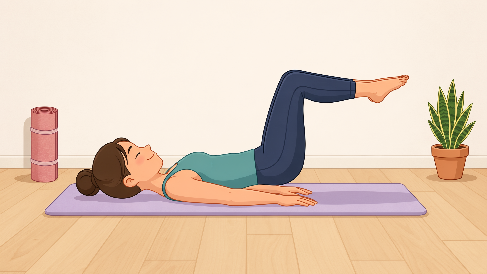
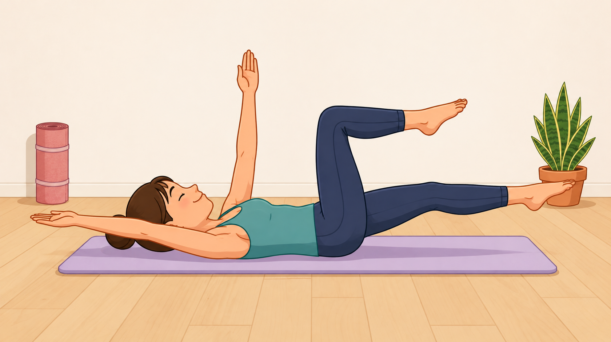
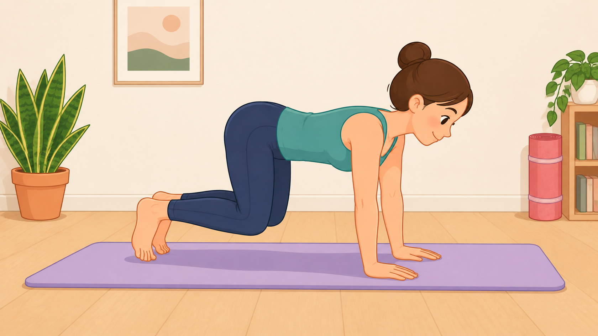
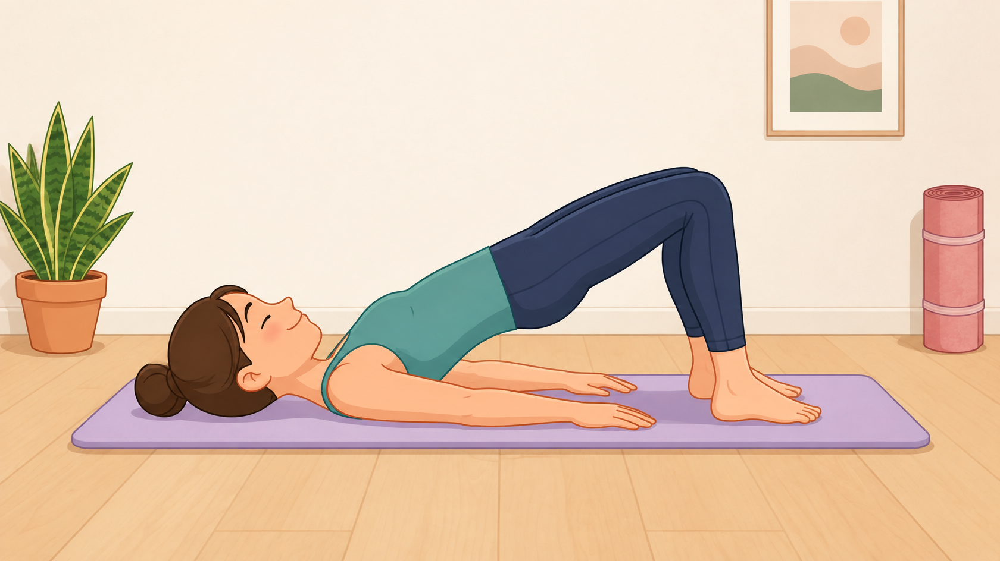

1. Tabletop Pose
Take deep breaths in the position to engage your deep transverse abdominis while maintaining a neutral lower back.
Consistent Core Conditioning

Take deep breaths in the position to engage your deep transverse abdominis while maintaining a neutral lower back.

Build anterior core control and protect the lower back during opposite arm and leg extensions.

Strengthen your core's ability to support your weight on all fours.

Isolate the gluteus maximus and reduce lumbar strain through proper posterior pelvic positioning.